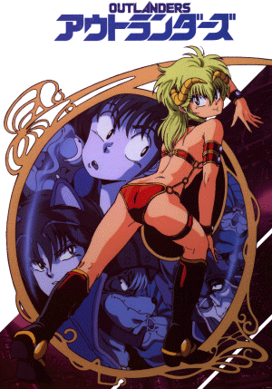

Outlanders

Useful Links
Anime Pocket Guide entry
Anime Web Turnpike: Outlanders Links
(you have to scroll down a bit)
Nintendo Games
Outlanders
Anime Video Game Resource Center © 1998 by
Luis A. Cruz